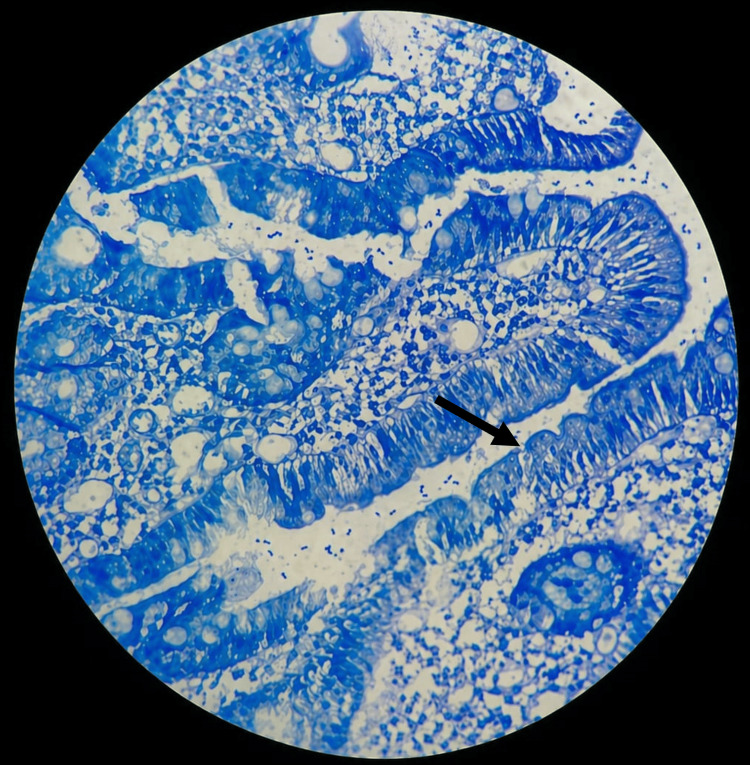
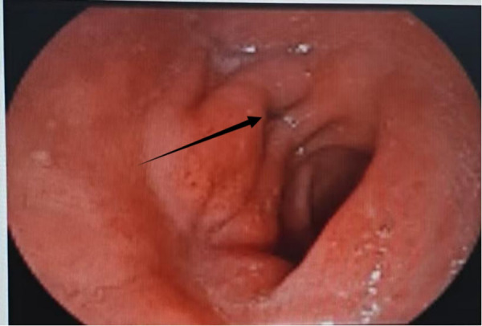
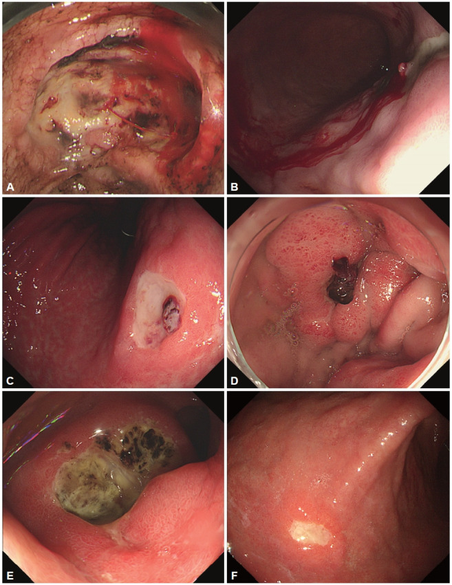
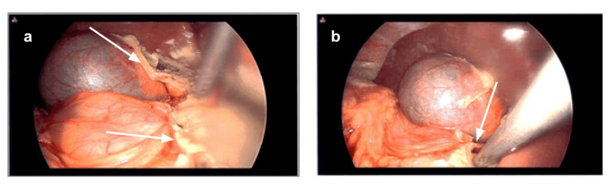

Язвенная болезнь желудка и двенадцатиперстной кишки
Этиология и патогенез язвенной болезни
Язвенная болезнь желудка и двенадцатиперстной кишки — хроническое рецидивирующее заболевание с образованием глубокого дефекта в стенке органа из-за преобладания агрессивных факторов желудочного сока над защитными механизмами. Болеют 8—12 % взрослого населения развитых стран, а число активных больных в Европе достигает 1—2 % взрослого населения.[Кузин, с. 282]

Патогенез включает экзогенные агенты и эндогенную дисрегуляцию. При их воздействии слизисто-бикарбонатный барьер перестаёт справляться с кислотно-пептической нагрузкой, и дефект углубляется до подслизистой основы и мышечной пластинки.
Ведущий экзогенный фактор — Helicobacter pylori, вырабатывающая фермент уреазу для выживания в кислой среде. H. pylori обнаруживают у 90—100 % больных дуоденальной язвой и у 70—80 % больных язвой желудка. Уреаза расщепляет мочевину до аммиака, образующего с соляной кислотой токсичный хлорамин. Бактерия выделяет ацетальдегид и продукты аммония, вызывая воспаление с инфильтрацией нейтрофилами, которые выделяют свободные кислородные радикалы и цитокины. Также H. pylori стимулирует G-клетки антрального отдела к выработке гастрина, активирующего обкладочные клетки фундального отдела к гиперсекреции соляной кислоты.
Кислотно-пептический фактор — совокупное повреждающее действие соляной кислоты и пепсина при ослаблении защиты. Пепсин активен при pH ниже 4: он расщепляет белки межклеточного матрикса и базальных мембран, превращая эрозию в глубокий дефект в местах контакта с кислым содержимым (антральный отдел, луковица двенадцатиперстной кишки, нижняя треть пищевода при рефлюксе).
Слизисто-бикарбонатный барьер состоит из муцинового геля и ионов бикарбоната, поддерживающих pH в подэпителиальном слое не ниже 7. При его разрушении пепсин проникает в межклеточные щели, и дефект углубляется до подслизистой основы и мышечного слоя (размеры хронических язв — от нескольких миллиметров до 5—6 см и более). НПВП снижают синтез простагландинов E₂ и I₂ через подавление ЦОГ-1 (системный путь) и нарушают митохондриальное дыхание клеток, запуская апоптоз (местный путь). Алкоголь напрямую растворяет липиды мембран и денатурирует муцины.
Тонус блуждающего нерва (n. vagus) при стрессе патологически повышается: вагусная гиперактивность стимулирует обкладочные клетки через М₃-холинорецепторы, повышает чувствительность G-клеток к гастрину и ускоряет моторику желудка. Воспаление снижает регенерацию, а нарушение микроциркуляции лишает зону кислорода и питательных веществ. Язвенная болезнь — это всегда результат дисбаланса, а не просто избытка кислоты или присутствия бактерии.
В США 42 % больных язвенной болезнью геликобактер-отрицательны. При синдроме Золлингера—Эллисона гастринома вызывает гиперпродукцию соляной кислоты: базальная секреция превышает 15 ммоль/ч, тогда как у оперированных на желудке пациентов она не достигает 5 ммоль/ч.[Кузин, с. 327]
Классификация язв желудка по Джонсону
В 1965 году хирург Джонсон выделил три самостоятельных типа по Джонсону по анатомической локализации и патогенетическому механизму.
| Тип | Локализация | Кислотность желудочного сока | Типичная операция |
|---|---|---|---|
| I | Малая кривизна тела желудка | Нормальная или сниженная | Дистальная резекция желудка (стволовая ваготомия с антрумэктомией, анастомоз по Ру или Бильрот-I) |
| II | Тело желудка + луковица двенадцатиперстной кишки (сочетанные язвы) | Повышенная | Стволовая ваготомия с антрумэктомией, удаление обеих язв, анастомоз по Ру |
| III | Препилорический отдел желудка (в пределах 3 см от привратника) | Повышенная | Те же принципы, что при дуоденальной язве; при сомнении в доброкачественности — резекция ¾ желудка с лимфаденэктомией D2 |
Тип I — язва малой кривизны тела желудка — самый частый. Малая кривизна уязвима к хроническому гастриту, вызываемому Helicobacter pylori. Кислотность нормальная или сниженная: барьер разрушается воспалением и атрофией. Выполняют дистальную резекцию желудка (стволовая ваготомия с антрумэктомией и анастомозом по Бильрот-I или по Ру) из-за риска первично-язвенного рака.[Кузин, с. 301]
Тип II — сочетанные язвы — поражение тела желудка и луковицы двенадцатиперстной кишки. Дуоденальная язва вызывает стеноз луковицы и антральный стаз, что стимулирует выброс гастрина и вторичную гиперпродукцию соляной кислоты. Кислотность и тонус блуждающего нерва повышены. Операция: стволовая ваготомия с антрумэктомией, удаление обеих язв и анастомоз по Ру.
Тип III — язва препилорического отдела (в пределах 3 см от привратника) протекает с повышенной кислотностью и высоким тонусом блуждающего нерва. При сомнении в доброкачественности показана резекция ¾ желудка с удалением сальника и лимфаденэктомией D2 с анастомозом по Ру или Бильрот.[Кузин, с. 302]
Определить тип по Джонсону до операции — значит заранее выбрать объём вмешательства и не ошибиться с методом. После резекции по Бильрот-II рецидив язвы возникает в 2—3 % случаев, а ваготомия с дренирующей операцией даёт излечение в 90 % и более случаев.[Кузин, с. 327]
Клиническая картина неосложнённой язвенной болезни
Главный симптом — боль в эпигастральной области, её отличительная черта — ритмичность.[Кузин, с. 291] Ранние боли (через 0,5—1 ч после еды, проходят при опорожнении желудка) характерны для язвы тела желудка. Поздние боли (через 1,5—2 ч после еды, проходят после приёма пищи или антацидов) типичны для язвы двенадцатиперстной кишки и пилорического отдела.[Кузин, с. 285] Ночные боли (с 23 до 3 часов ночи) связаны с ночным повышением тонуса блуждающего нерва и гиперсекрецией соляной кислоты при дуоденальных и пилорических язвах.[Кузин, с. 285]
Иррадиация болей зависит от локализации: при язвах кардиального и субкардиального отделов — в область сердца, левую лопатку, грудной отдел позвоночника; при пилорических и дуоденальных — вправо от срединной линии, в поясницу, правое подреберье и межлопаточное пространство; при постбульбарных — в спину и правую подлопаточную область.[Кузин, с. 286]
| Локализация язвы | Тип болей по времени | Место боли в эпигастрии | Иррадиация |
|---|---|---|---|
| Тело желудка (малая кривизна, I тип по Джонсону) | Ранние — через 0,5—1 ч после еды | Эпигастрий, больше слева | Как правило, нет |
| Кардиальный и субкардиальный отделы желудка | Ранние — через 0,5—1 ч после еды | Область мечевидного отростка | Область сердца, левая лопатка, грудной отдел позвоночника |
| Пилорический отдел (III тип по Джонсону) | Поздние — через 1,5—2 ч и более; ночные и «голодные» | Эпигастрий, правее срединной линии | Поясничная область, правая лопатка |
| Луковица двенадцатиперстной кишки | Поздние — через 1,5—2 ч; ночные — с 23 ч до 3 ч | Эпигастрий, справа от срединной линии | Поясничная область, межлопаточное пространство, правая лопатка |
| Постбульбарный (внелуковичный) отдел | Поздние; ночные особенно выражены | Область спины, правая подлопаточная зона | Спина, правое подреберье |
Дополняет картину диспептический синдром: отрыжка (у 50—65 % больных), изжога, тошнота и рвота на высоте боли, приносящая облегчение. Аппетит сохранён или повышен. Заболеванию свойственна сезонность обострений (весна и осень).
Рентгенологическая и эндоскопическая диагностика гастродуоденальных язв
Рентгенологический и эндоскопический методы являются решающими в диагностике язв.[Кузин, с. 291]

Рентгенологическое исследование: симптом «ниши» и его разновидности
Прямой рентгенологический признак — симптом «ниши» (стойкое скопление контрастного вещества).[Кузин, с. 290] Выделяют нишу на контуре (выступ за пределы тени желудка) и нишу рельефа (скопление контраста на рельефе). К нише рельефа сходятся складки слизистой — конвергенция складок (косвенный признак).[Кузин, с. 290] При язве желудка эвакуация содержимого замедлена, а при дуоденальной язве — ускорена.[Кузин, с. 290]
Деформация луковицы двенадцатиперстной кишки
Повторные обострения при язве луковицы двенадцатиперстной кишки приводят к рубцовой деформации «трилистника» (разделение на три кармана) или к трубкообразному сужению со стенозом.[Кузин, с. 290]
Динамическая радионуклидная гастросцинтиграфия
Для оценки скорости эвакуации применяют динамическую радионуклидную гастросцинтиграфию с завтраком, меченным короткоживущим изотопом технецием-99m (Tc99m, период полураспада около 6 часов). Метод выявляет ускорение эвакуации при дуоденальной язве.[Кузин, с. 290]
Эндоскопическое исследование: критерии язвы и стадии заживления
Эндоскопия визуализирует дефект и позволяет брать биопсию из нескольких точек краёв и дна для морфологической верификации.[Кузин, с. 291] В активной фазе выявляется дефект с фибринозным дном и отёчными краями; размеры язвы луковицы двенадцатиперстной кишки составляют 1—1,5 см, хронической язвы желудка — 5—6 см и более.[Кузин, с. 290] Стадии заживления: активное воспаление, эпителизация и рубцевание с конвергенцией складок.[Кузин, с. 290]
Дифференциальная диагностика язвы желудка и первично-язвенного рака
Первично-язвенный рак изначально растёт как язвенный дефект. При раке боль тупая, постоянная, без связи с едой и сезонностью, сопровождается анорексией, похуданием и слабостью; кислотность может быть нормальной или повышенной.
| Признак | Доброкачественная язва | Первично-язвенный рак |
|---|---|---|
| Возраст | Любой, чаще средний | Чаще старше 50 лет |
| Болевой синдром | Ритмичный, связан с едой, сезонный | Тупой, постоянный, без чёткой связи с едой |
| Аппетит и масса тела | Не изменены или умеренно снижены | Анорексия, прогрессирующее похудание |
| Кислотность | Чаще снижена при язве тела желудка | Нормальная или повышенная — не исключает рак |
| Края язвы (эндоскопия) | Ровные, чёткие, мягкие | Подрытые, валикообразные, ригидные |
| Дно язвы (эндоскопия) | Гладкое, покрыто фибрином | Бугристое, с некрозом |
| Складки слизистой | Конвергируют к краю, мягкие | Обрываются у края, ригидные |
| Динамика на фоне лечения | Заживает за 4–8 недель | Не заживает или «заживает» ложно |
| Гистология биоптата | Грануляционная ткань, воспаление | Атипичные клетки, аденокарцинома |
Прицельная биопсия берется из не менее 6–8 фрагментов (по 2 из каждого квадранта края и 1–2 со дна). Гистология точна в 95 %, цитология — в 70 %. Из-за подслизистого роста опухоли возможны 5–10 % ложноотрицательных результатов, поэтому при подозрении проводят 2–3-кратную биопсию.[Кузин, с. 291]
Верифицированный рак или не уверенность в доброкачественности — показание к резекции 3/4 желудка с лимфаденэктомией D2 (удаление перигастральных лимфоузлов и узлов вдоль левой желудочной, общей печёночной и селезёночной артерий) и анастомозом по Ру, Бильрот-I или Бильрот-II.[Кузин, с. 302]
Синдром Золлингера — Эллисона
Синдром Золлингера — Эллисона включает триаду: рецидивирующая пептическая язва (у 90 % больных — в верхних отделах ЖКТ, включая ДПК и тощую кишку), гиперсекреция соляной кислоты и гастринома (нейроэндокринная опухоль, продуцирующая гастрин).[Кузин, с. 327]
Базальная секреция соляной кислоты превышает 15 ммоль/ч (у оперированных больных — 5 ммоль/ч).[Кузин, с. 327] Диагноз подтверждают секретиновым (парадоксальный подъём гастрина) и кальциевым провокационными тестами.[Кузин, с. 327]
Гастринома чаще находится в поджелудочной железе (средний размер ~1 см, 60 % злокачественные). Почти у половины больных встречается внепанкреатическая локализация (стенка ДПК, размеры 1–3 мм, множественные, озлокачествление ≤ 5 %). Спорадические опухоли чаще одиночные в поджелудочной железе, наследственные (синдром Вермера / MEN 1) — множественные, до 50 % в ДПК.[Кузин, с. 437]
При одиночной опухоли поджелудочной железы делают энуклеацию или резекцию; при дуоденальной — иссечение с ревизией стенки. Неудаляемые опухоли требуют приема ингибиторов протонной помпы. Антиязвенные операции без удаления гастриномы дают рецидив.[Кузин, с. 437]
Язвенные гастродуоденальные кровотечения: классификация и диагностика
Язвенные кровотечения составляют около 60 % всех острых кровотечений из ЖКТ. Хронические язвы желудка и двенадцатиперстной кишки осложняются кровотечением в 15–20 % случаев (при дуоденальной локализации — в 3–4 раза чаще). В 10 % случаев кровотечение служит первым проявлением язвы.[Синдромология, с. 369]

С момента начала кровотечения боль уменьшается или исчезает (симптом Бергмана), так как излившаяся кровь нейтрализует соляную кислоту.[Кузин, с. 304]
Клинические симптомы:
- Гематемезис (рвота кровью): алая — при быстром артериальном кровотечении; цвета «кофейной гущи» (солянокислый гематин) — при более медленном.
- Мелена (дёгтеобразный чёрный зловонный стул): результат разложения гемоглобина в кишечнике. При обильной кровопотере стул может иметь вид «вишнёвого желе». Одномоментные гематемезис и мелена — признак массивной кровопотери.
При значительной кровопотере развивается геморрагический шок (бледность, холодный пот, тахикардия, падение АД). Стандарт диагностики и верификации — эзофагогастродуоденоскопия.
| Степень | Эндоскопическая картина | Риск рецидива | Тактика |
|---|---|---|---|
| IA | Активное артериальное (струйное) кровотечение | Очень высокий | Экстренная операция или эндоскопический гемостаз |
| IB | Активное подтекание крови из язвы | Высокий | Попытка эндоскопического гемостаза; при неудаче — операция |
| IIA | Остановившееся кровотечение: видимый тромбированный сосуд | Высокий (до 50 %) | Неотложная операция в ближайшие сутки |
| IIB | Фиксированный тромб-сгусток, закрывающий дно язвы | Умеренный | Консервативное лечение под наблюдением |
| IIC | Мелкие тромбированные сосуды («красные пятна»), геморрагический налёт | Низкий | Консервативное лечение |
| III | Чистое дно язвы без признаков кровотечения | Минимальный | Плановое лечение |
По классификации Forrest выделяют активное (класс I: IA — струйное, IB — подтекание) и остановившееся кровотечение (классы II и III). При IIA (видимый тромбированный сосуд) риск рецидива достигает 50 %. Степень по Forrest определяет срочность операции — от немедленной при IA до плановой при III.
Эндоскопический и хирургический гемостаз при кровоточащей язве
Эндоскопический гемостаз успешен в 90 % случаев. Применяемые методы:
- Инъекционный метод: введение адреналина, этанола или этоксисклерола вокруг язвы (сдавление сосуда отёком).
- Термический метод: электро- или аргоноплазменная коагуляция.
- Клипирование: механическое пережатие сосуда скрепкой.
- Капрофер (е-аминокапроновая кислота и треххлористое железо): химический тромбоз при диффузном просачивании.
При Forrest I сочетают инъекцию адреналина с коагуляцией или клипированием. При Forrest IIa и IIb сгусток смывают и обрабатывают зону коагуляцией или клипсами. При Forrest IIc и III гемостаз не требуется.
Экстренная операция показана при продолжающемся кровотечении Forrest I и неэффективности эндоскопии. Срочная операция (в первые сутки) проводится при отсутствии стабилизации после переливания до 1500 мл крови за 24 ч. После остановки кровотечения (Forrest II–III) операция показана больным старше 50 лет, с длительным язвенным анамнезом, каллезной или стенозирующей язвой.[Кузин, с. 307]
Хирургическое вмешательство:
- При язве двенадцатиперстной кишки: стволовая ваготомия (пересечение стволов блуждающего нерва) + прошивание кровоточащего сосуда + пилоропластика. При сочетанных язвах ваготомию дополняют антрумэктомией по Ру.[Кузин, с. 307]
- При язве желудка: стволовая ваготомия с резекцией желудка (по Ру или Бильрот-I) для обязательной гистологической верификации. У ослабленных больных — ваготомия с иссечением язвы и пилоропластикой или прошивание сосуда.[Кузин, с. 307, Синдромология, с. 374]
Перфорация язвы: классификация и предрасполагающие факторы
Перфорация возникает примерно у 10 % больных язвенной болезнью.[Кузин, с. 641]

Варианты перфорации:[Кузин, с. 308]
- Свободная перфорация: сквозной разрыв (чаще передней стенки двенадцатиперстной кишки) с излиянием содержимого в брюшную полость и развитием химического перитонита. Свободный газ под куполом диафрагмы выявляется более чем у 90 % больных; триада (анамнез, кинжальная боль, доскообразный живот) — у 70–80 %.[Кузин, с. 641] При прорыве задней стенки желудка содержимое поступает в сальниковую сумку.
- Прикрытая перфорация: перекрытие отверстия сальником, печенью или тканями, что временно стирает симптоматику.[Кузин, с. 308]
- Пенетрация: прорастание язвы в смежные органы (поджелудочную железу, малый сальник). Проявляется постоянными болями (опоясывающими — при поражении поджелудочной железы), субфебрилитетом и лейкоцитозом.[Кузин, с. 317]
Фактор риска — стероидные язвы на фоне приема кортикостероидов, повреждающие бикарбонатный барьер и маскирующие боль. В структуре осложнений язвенной болезни пенетрация составляет 5 %, перфорация — около 10 %.
Перфоративная язва: клиническая картина и диагностика
Когда стенка желудка или двенадцатиперстной кишки разрушается насквозь, содержимое выходит в брюшную полость.[Кузин, с. 308]
Классическую триаду (70–80 % больных) составляют: язвенный анамнез, внезапная кинжальная боль в эпигастрии (мгновенно достигает максимума), доскообразное напряжение мышц брюшной стенки (рефлекторное сокращение в ответ на раздражение брюшины) и исчезновение печёночной тупости (звук становится тимпаническим из-за воздуха над печенью).
Стадии перитонита при перфорации:
- В первые 6 часов — стадия химического перитонита: боль нестерпима, живот неподвижен, рвота редка, температура не повышена.
- Через 6–12 часов — стадия мнимого благополучия: боль и напряжение мышц уменьшаются, но перитонит прогрессирует.
- После 12 часов — стадия диффузного гнойного перитонита: лихорадка, тахикардия, парез кишечника, интоксикация. Боль может сместиться в правую подвздошную область, имитируя острый аппендицит.[Кузин, с. 641]
Главный инструментальный признак — свободный газ под диафрагмой. На обзорной рентгенограмме стоя (при перфорации язвы двенадцатиперстной кишки выявляется более чем у 90 % пациентов) он виден как узкий серп просветления между печенью и правым куполом диафрагмы.[Кузин, с. 641] При сомнениях выполняют компьютерную томографию, определяющую минимальное количество газа под передней брюшной стенкой и сопутствующий выпот.
Рвота при перфорации редка. Перфоративная язва — хирургическая катастрофа с чёткой временно́й зависимостью: чем раньше поставлен диагноз и начата операция, тем выше шансы на выздоровление.
Хирургическое лечение перфоративных язв
Перфорация — абсолютное показание к экстренной операции. Выбор объёма вмешательства определяется тяжестью состояния больного и стадией перитонита, характером и локализацией язвы, условиями стационара и квалификацией хирурга.[Кузин, с. 313]
Разбор случая: от картины к действию
При распространённом перитоните, высоком операционном риске, стрессовом или лекарственном генезе язвы выполняют минимальное вмешательство — ушивание перфорации отдельными серозно-мышечными швами в поперечном направлении с санацией и дренированием брюшной полости.[Кузин, с. 296, 313] Линию швов укрепляют прядью большого сальника (оментопластика). Метод не устраняет кислотно-пептический фактор: без последующей эрадикации Helicobacter pylori и медикаментозного лечения вероятен рецидив.[Кузин, с. 313]
Стволовая ваготомия с иссечением язвы и пилоропластикой по Гейнеке — Микуличу
При стабильном состоянии выполняют стволовую ваготомию с иссечением язвы и пилоропластикой по Гейнеке — Микуличу (продольный разрез до 6–7 см сшивают в поперечном направлении для компенсации моторики). Операция даёт стойкое излечение в 90 % и более случаев; послеоперационная летальность при плановых операциях типа ваготомии составляет менее 0,3 %.[Кузин, с. 313]
Селективная проксимальная ваготомия при перфоративной язве двенадцатиперстной кишки
Селективная проксимальная ваготомия (СПВ) — пересечение ветвей нерва Латарже, иннервирующих тело и свод желудка, при сохранении дистальных ветвей. СПВ не нарушает эвакуаторную функцию желудка и не требует дренирующей операции.[Кузин, с. 300] Выполняется в специализированных стационарах. Неполное пересечение ветвей ведет к рецидиву у 10–12 % больных. Послеоперационная летальность после СПВ — 0,3 % и менее.[Кузин, с. 301]
Антрумэктомия с ваготомией при язвах II типа по Джонсону
Антрумэктомия со стволовой ваготомией подавляет гормональную и нейрорефлекторную фазы секреции.[Кузин, с. 299] Выполняется при сочетанных язвах II типа по Джонсону (перфорация язвы ДПК с язвой желудка или перфорация язвы желудка с язвой ДПК). Язва желудка требует гистологической верификации. Послеоперационная летальность при антрумэктомии со стволовой ваготомией и гастроеюнальным анастомозом составляет около 1,5 %.[Кузин, с. 299]
Ключевой вывод раздела: объём операции при перфоративной язве определяется не хирургической амбицией, а балансом трёх переменных. Распространённый перитонит или тяжёлое состояние — показание к ушиванию. Стабильное состояние при язве двенадцатиперстной кишки — стволовая ваготомия с пилоропластикой по Гейнеке — Микуличу. Сочетанные язвы II типа — антрумэктомия с ваготомией. СПВ — только при высокой квалификации хирурга.[Кузин, с. 313]
Пенетрация язвы
Пенетрирующая язва возникает при прорастании дефекта за пределы серозной оболочки в сращённый соседний орган-мишень.[Кузин, с. 285] Язвы задней стенки луковицы ДПК пенетрируют в головку поджелудочной железы, язвы малой кривизны — в малый сальник, язвы передней стенки желудка — в печень. Наиболее частые мишени — малый сальник, головка поджелудочной железы и печёночно-двенадцатиперстная связка.[Кузин, с. 317]
Перфорация встречается примерно у 10 % больных язвенной болезнью, пенетрация — приблизительно у 5 %, однако пенетрация диагностируется значительно позже из-за постепенного начала.
При пенетрации боли становятся постоянными, теряют связь с едой и не купируются антацидами. Усиливаются тошнота и рвота, могут появляться субфебрилитет, лейкоцитоз и увеличение СОЭ.[Кузин, с. 317] При пенетрации в головку поджелудочной железы возникает иррадиация в спину (опоясывающего характера), требующая дифференциальной диагностики с острым панкреатитом.
Диагностика: рентгеноконтрастное исследование (симптом глубокой «ниши», выходящей за контур стенки), эндоскопия с прицельной биопсией, УЗИ и КТ (оценка отёка и инфильтрации органа-мишени).
При неглубокой пенетрации выполняют иссечение язвы с ваготомией и дренирующей операцией. При глубокой пенетрации в головку поджелудочной железы операцией выбора становится резекция желудка, а дно язвы в поджелудочной железе ушивают или оставляют для дренирования. Ключевой принцип: чем глубже пенетрация и чем значительнее воспалительный инфильтрат вокруг язвы, тем шире должен быть объём резекции.[Кузин, с. 317]
Пилородуоденальный язвенный стеноз
Стеноз привратника формируется месяцами и годами: каждое обострение язвы оставляет рубец, суживающий просвет. Принята трёхстадийная классификация: компенсированный, субкомпенсированный и декомпенсированный стеноз.
| Стадия | Клиника | Эвакуация из желудка | Рекомендуемая операция |
|---|---|---|---|
| Компенсированная | Тяжесть после еды, периодическая рвота с облегчением, общее состояние не страдает | Умеренно замедлена, желудок не расширен или слегка расширен | СПВ + дуоденопластика (предпочтительно); при невозможности — СПВ + пилоропластика |
| Субкомпенсированная | Постоянное чувство переполнения, обильная рвота застойным содержимым, похудание, слабость | Значительно замедлена, желудок расширен, видна перистальтика | СПВ + дренирующая операция; показания к операции абсолютные |
| Декомпенсированная | Атония желудка, рвота большими объёмами, истощение, алкалоз, гипокалиемия, гипохлоремия | Резко нарушена или отсутствует, желудок атоничен и резко расширен | Резекция желудка (метод выбора); предварительно — интенсивная предоперационная подготовка |
На стадии компенсированного стеноза желудок справляется за счёт гипертрофии мышечной стенки. Больной жалуется на тяжесть после еды и рвоту с облегчением; общее состояние и масса тела удерживаются, эвакуация замедлена умеренно.
Выполняют СПВ (селективную проксимальную ваготомию) в сочетании с дуоденопластикой в пределах деформированной луковицы двенадцатиперстной кишки без вмешательства на привратнике. Дуоденопластика сохраняет функцию привратника. После СПВ дуоденогастральный рефлюкс развивается редко, диарея или демпинг-синдром встречаются нечасто, а послеоперационная летальность составляет 0,3 % и менее.[Кузин, с. 301]
При субкомпенсированном стенозе наблюдаются постоянное чувство переполнения, обильная рвота застойным содержимым с запахом брожения, похудание, расширение желудка и видимая перистальтика. Эвакуация значительно замедлена. Показания к операции абсолютные; при возможности дуоденопластику предпочитают дренирующей пилоропластике для сохранения функции привратника.
Стадия декомпенсированного стеноза характеризуется атонией и резким расширением желудка, нарушением или отсутствием эвакуации. Постоянная рвота большими объёмами приводит к потере хлора и водорода, развитию гипохлоремического алкалоза и тяжёлой гипокалиемии, представляющих главную угрозу для жизни.
Методом выбора служит резекция желудка, устраняющая стеноз, источник секреции и атоничную стенку. Частота рецидива язвы после резекции по Бильрот-II составляет 2–3 %.
Декомпенсированный стеноз требует предоперационной подготовки для восстановления электролитного баланса, устранения алкалоза и разгрузки желудка (промывание через зонд, введение растворов хлорида калия и хлорида натрия, парентеральное питание).
Консервативное лечение язвенной болезни: место в хирургической тактике
Основа консервативного лечения — эрадикационная терапия (уничтожение Helicobacter pylori комбинацией антибиотиков и кислотоподавляющих препаратов). Helicobacter pylori обнаруживают у 90—100 % больных дуоденальной язвой и у 70—80 % больных язвой желудка. Устранение возбудителя прекращает разрушение слизисто-бикарбонатного барьера и переводит болезнь в ремиссию.[Кузин, с. 282]
Ингибиторы протонной помпы блокируют фермент секреции соляной кислоты в париетальных клетках. До операции они уменьшают язву и воспаление, после операции совместно с антацидами защищают анастомоз и зону пилоропластики от раннего рецидива.
Нарастание тяжести осложнений увеличивает показания к операции.[Кузин, с. 296]
Абсолютные показания к операции — перфорация, профузное кровотечение (не остановленное эндоскопически и при переливании крови до 1500 мл за 24 ч) и декомпенсированный стеноз привратника.[Кузин, с. 307]
Относительные показания включают: язву, не поддающуюся консервативному лечению; каллёзную язву с подозрением на малигнизацию; часто рецидивирующее течение с повторными кровотечениями в анамнезе; язву у больных, не способных отказаться от приёма нестероидных противовоспалительных препаратов или кортикостероидов.
Успешность консервативного лечения при остановившемся кровотечении и эрозивно-язвенных поражениях достигает 90 %. Консервативное лечение — необходимый контекст хирургии, определяющий показания и сроки оперативного вмешательства.
Источники
- Госпитальная хирургия. Синдромология. Миланов 2013
- Хирургические болезни. Кузин
Иллюстрации
- Europe PMC, CC BY, https://europepmc.org/article/PMC/PMC13269350
- Europe PMC, CC BY-NC, https://europepmc.org/article/PMC/PMC13284575
- Europe PMC, CC BY, https://europepmc.org/article/PMC/PMC13142192
- Wikimedia Commons, CC BY-SA 2.5, https://commons.wikimedia.org/wiki/File%3APneumoperitoneum_modification.jpg
- Wikimedia Commons, CC BY-SA 3.0, https://commons.wikimedia.org/wiki/File%3AFreeairCT.png
- Europe PMC, CC BY, https://europepmc.org/article/PMC/PMC13030677
- Europe PMC, CC BY, https://europepmc.org/article/PMC/PMC13078098
- Europe PMC, CC BY, https://europepmc.org/article/PMC/PMC13264703